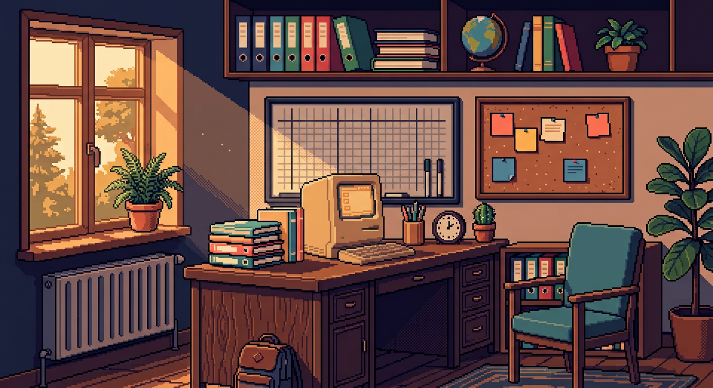

Selamat pagi,
Bu Ratna

RUANG KERJATools mengajar
Berikutnya
KKM MATA PELAJARAN IPA · 75
Catat Pertemuan
JURNAL MENGAJAR · DATA TERSIMPAN LOKAL
DESIGN KIT
Token desain yang sama dipakai di prototipe ini dan nantinya di Jetpack Compose. Semua nilai warna, ukuran, dan komponen di bawah siap disalin ke tema Android.
Warna inti
Tipografi
Komponen
Spesifikasi teknis
Grid 8 DP · padding layar 14 DP
Border 2–3 px hard edge, radius 0
Bayangan solid 3–4 px ke bawah, tanpa blur
Ikon 16 × 16 piksel, crisp edges
Font OFL · Pixelify Sans, Silkscreen, Press Start 2P
Target Android 8+ · Compose · Material 3 dimatikan warnanya
Alur navigasi
Beranda (scene interaktif + 6 tool) → Jurnal (daftar + tambah) · Absensi (pilih kelas, tap status) · Nilai (input langsung, NA otomatis) · Jadwal (per hari)
Bottom nav 5 tujuan · FAB hanya pada Jurnal · Bottom sheet untuk form cepat · Semua aksi memberi umpan balik toast.